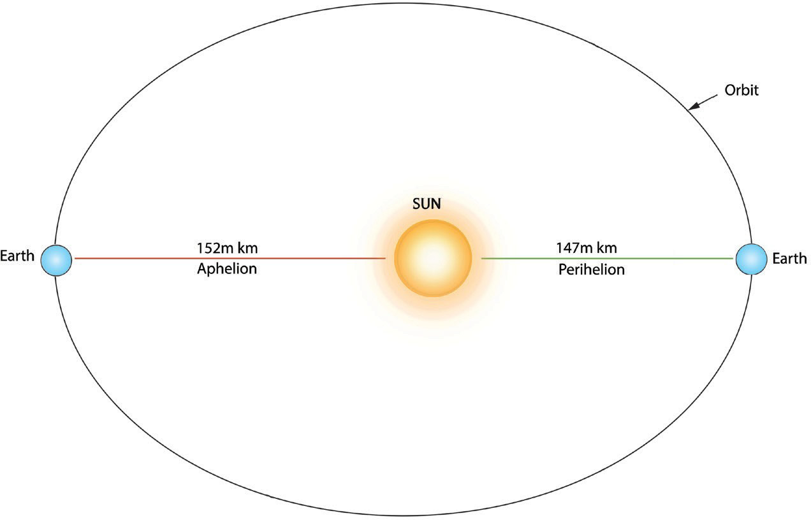

Exercise 3.4
Discuss the effects of the earth’s revolution in your area.
Explain the common economic activities carried out in your area in different seasons of the year.
Activity 3.6
 Activity 3.6
Activity 3.6Think of your community at home town or village, and relate the seasons of the year with their daily activities.
Use the following questions for guidance:
(a) What activities do they conduct in each season?
(b) Why do you think they do such activities in that particular season?
Write short essay on the activities done in relation to the seasons of the year.
(iv) Aphelion and Perihelion
The Earth revolves around the sun in an elliptical orbit. Due to the elliptical shape of the earth’s orbit, the Sun is closer to the Earth at one point of the year than at the other (Figure 3.7). The furthest position from the sun in the orbit of the earth is called aphelion. Normally, the Earth is at aphelion each year on 4th July when it is 152 million kilometres away from the Sun. Perihelion occurs when the Earth is nearest to the Sun about 147 million kilometres away from the Sun. The Earth is at perihelion each year on the 3rd of January. Aphelion and perihelion affect the amount of solar radiation received by the Earth, though their influence on the seasons is much smaller than the axial tilt. The slight variation in solar radiation due to Earth’s changing distance from the Sun during its orbit is not sufficient to cause significant climate change or shifts in seasons.

Figure 3.7: Perihelion and aphelion